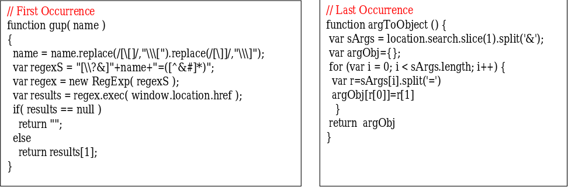

To test for HPP client-side vulnerabilities, identify any form or action that allows user input and shows a result of that input back to the user. A search page is ideal, but a login box might not work (as it might not show an invalid username back to the user).
Similarly to server-side HPP, pollute each HTTP parameter with %26HPP_TEST and look for url-decoded occurrences of the user-supplied payload:
&HPP_TEST
&HPP_TEST
… and others
HPP Client Side is about injecting additional parameters to links and other src attributes
It's more about
Anti-CSRF
Functional UI Redressing
Suppose the following code:
<? $val=htmlspecialchars($_GET['par'],ENT_QUOTES); ?>
<a href="/page.php?action=view&par='.<?=$val?>.'">View Me!</a>
It’s just necessary to send a request like
http:/host/page.php?par=123%26action=edit
To obtain
<a href="/page.php?action=view&par=123&action=edit">View Me!</a>
HPP DOM Based
It's about parsing unexpected parameters
It's about the interaction between IDSs and the application
It's about the generation of client side HPP via JavaScript
It's about the use of (XMLHttp)Requests on polluted parameters